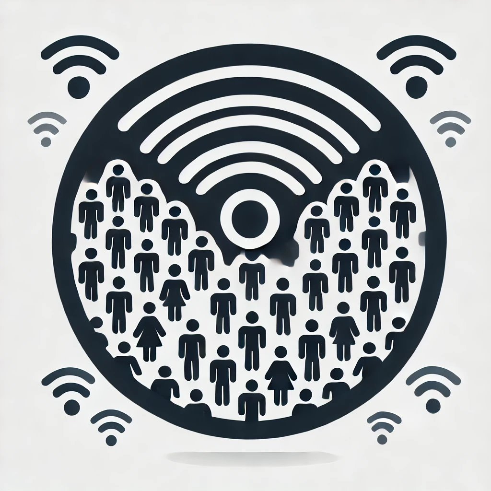

Outlier Detection in Medicare Inpatient Charges
Detecting anomalies in Medicare inpatient hospital charges using PCA and KNN to identify potential fraudulent billing patterns and unusual financial transactions.
View on GitHub
Reinforcement Learning: Connect-X
Developed a reinforcement learning agent to strategically play ConnectX, optimizing moves using Deep Q-Networks (DQN) and Monte Carlo Tree Search (MCTS) to compete in a dynamic multi-agent environment.
View on GitHub

Crowd Density Estimation Using RSSI Values
Non-intrusive crowd monitoring using Wi-Fi RSSI signals and ML models.
View on GitHub
Lip-Read Detection
A deep learning-based model that accurately predicts spoken sentences from silent video sequences, enabling speech recognition without audio for accessibility and security applications.
View on GitHub
Breast Cancer Prediction
Evaluated five ML classifiers to enhance early breast cancer detection.
View on GitHub
Dog Hip Analysis using Dreambooth
Developed an AI-driven approach using DreamBooth and Stable Diffusion to generate synthetic canine hip radiographs for diagnosing hip dysplasia, with my contribution focused on fine-tuning the DreamBooth model for enhanced medical imaging
View on GitHub
Automated Stall Detection
Developed an object detection model to accurately identify and analyze cow stall numbers, optimizing livestock management and resource allocation.
View on GitHub
IMdb-SQL-Analytics
Conducted SQL-based exploratory data analysis on IMDb movie data to extract insights on revenue trends, audience preferences, and competitor benchmarking.
View on GitHub
Lead Scoring Analysis
Developed a machine learning model to predict high-value leads and optimize conversion rates for X Education.
View on GitHub
Telecom Customer Churn Prediction
Built predictive models to identify high-value customers at risk of churn in the telecom industry, helping optimize customer retention strategies.
View on GitHub
Hateful Meme Detection
A multimodal machine learning approach using VisualBERT, RoBERTa, and ViLBERT to detect hate speech in memes by integrating textual and visual information.
View on GitHub
ElecKart Analysis
An end-to-end E-commerce analytics project focusing on media mix modeling and GMV prediction across Camera Accessories, Home Audio, and Gaming Accessories.
View on GitHub